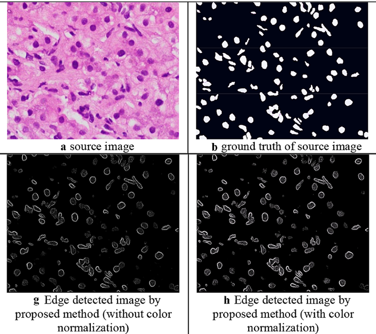
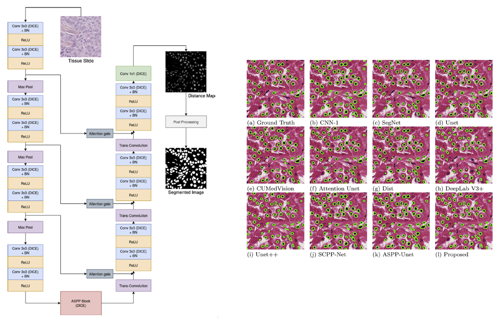
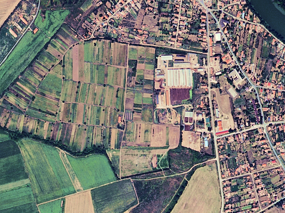
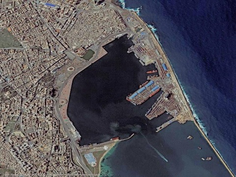
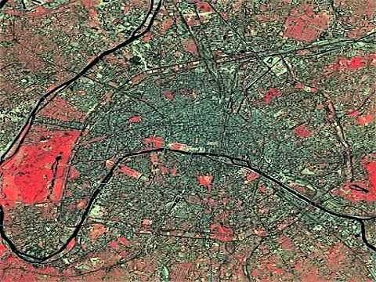

Publications



Novel edge detection method for nuclei segmentation of liver cancer histopathology images
Santanu Roy*, Devikalyan Das, Shyam Lal, Jyoti Kini
Journal of Ambient Intelligence and Humanized Computing, 2021

Efficient deep learning architecture with dimension-wise pyramid pooling for nuclei segmentation of histopathology images
Anirudh Ashok Aatresh, Rohit Prashant Yatgiri, Amit Kumar Chanchal, Aman Kumar, Akansh Ravi, Devikalyan Das, BS Raghavendra, Shyam Lal, Jyoti Kini
Computerized Medical Imaging and Graphics, 2021

A robust framework for quality enhancement of aerial
remote sensing images
Eerapu Karuna Kumari*,Devikalyan Das*, Shilpa Suresh,
Shyam Lal, AV Narasimhadhan
Journal of Infrared Physics & Technology, 2018

Image quality restoration framework for contrast enhancement of satellite remote sensing images
Shilpa Suresh*, Devikalyan Das*, Shyam Lal, Deep Gupta
Journal of Remote Sensing Applications: Society and
Environment, 2018

A Framework for Quality Enhancement of Multispectral
Remote Sensing Images
Shilpa Suresh*, Devikalyan Das*, Shyam Lal
Ninth International Conference on Advanced Computing
(ICoAC), 2017